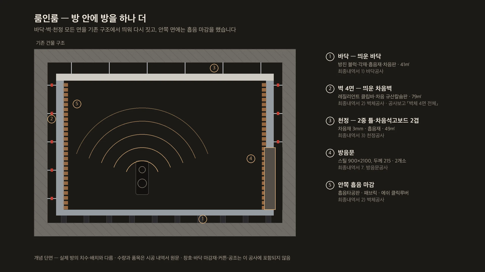
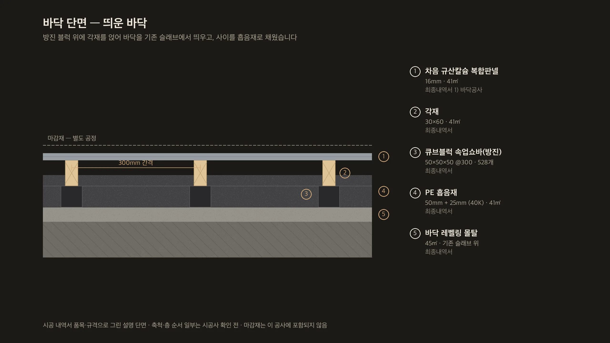
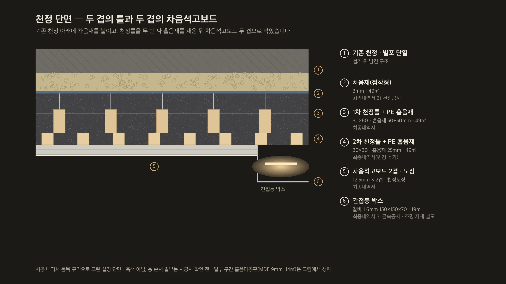
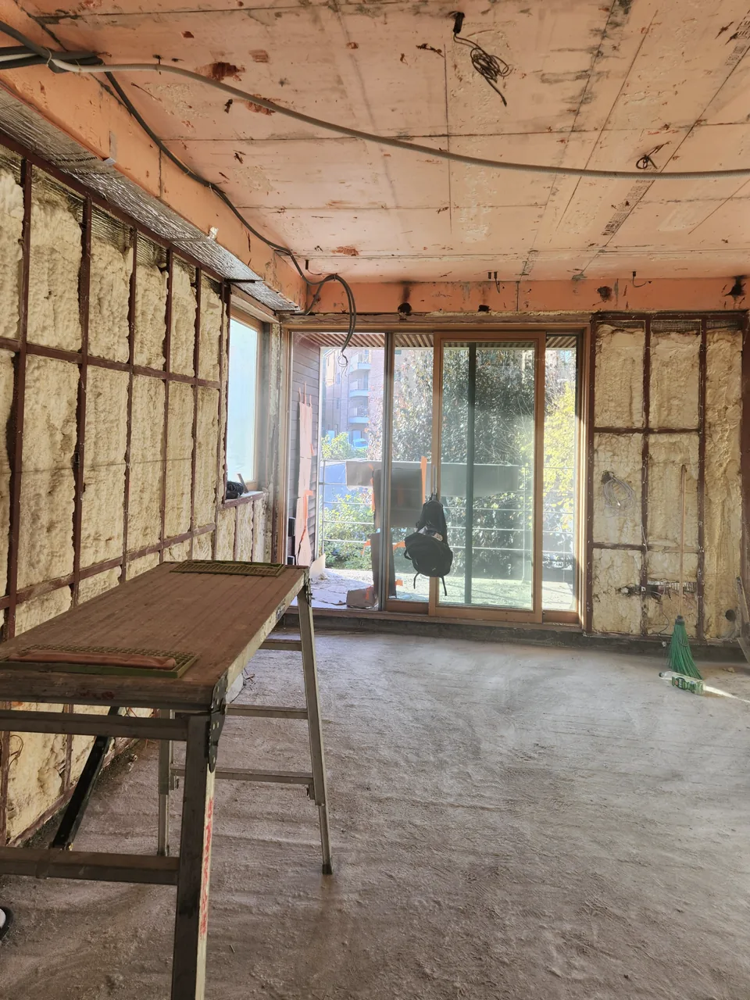
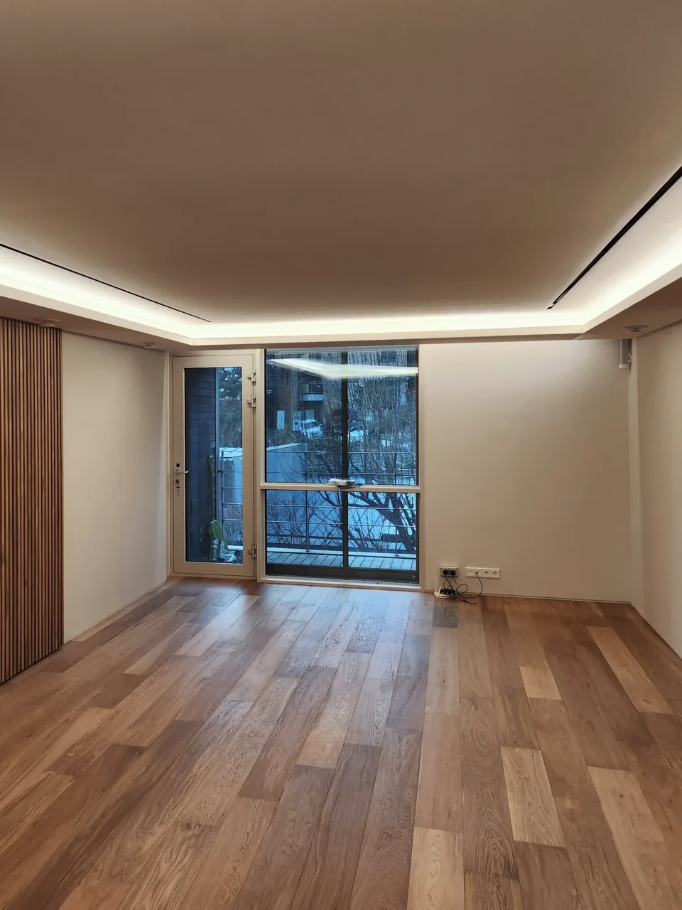
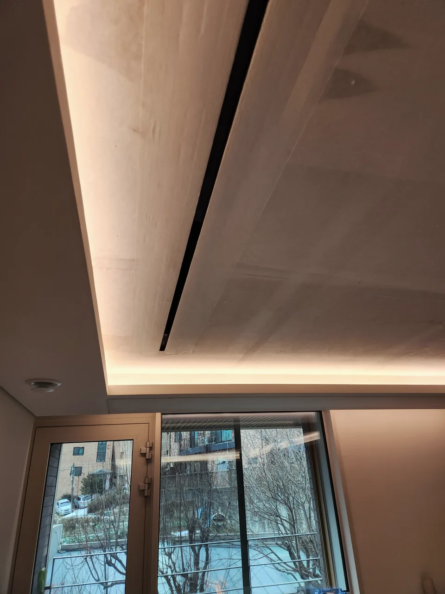
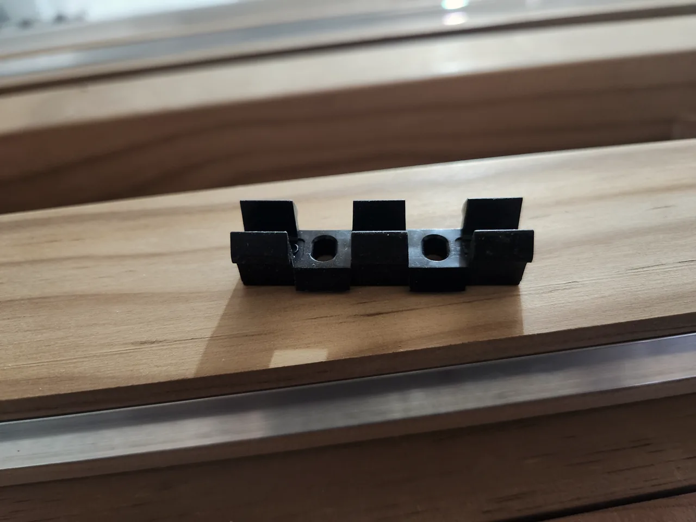
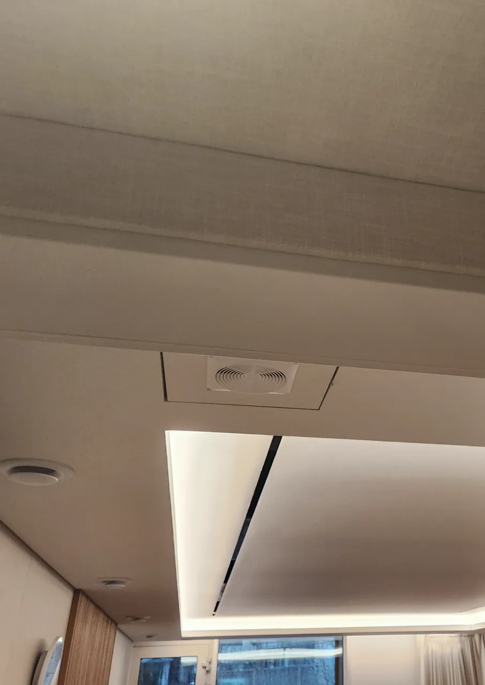

서로 연결되는 세 면과 문
- 바닥을 띄우는 방진 구조
- 벽체를 분리하는 클립·차음층
- 천장 틀과 차음층
- 안쪽의 타공판·패브릭·원목 루버
- 방음문과 틈의 마감
도해는 현장 기록을 설명하기 위한 그림입니다. 실제 연결부 상세는 시공사 확인 전입니다.
PROJECT 01 · AV룸 내장공사 기록
한 AV룸의 현장 자료를 바탕으로 정리한 아비드의 내장 공사 기록입니다.
벽·천장·문·표면 마감과 화장실 개조, 그 안쪽의 차음·흡음 구조를 살펴봅니다. 다른 업체 공정은 구분해 표시합니다.
01 / STRUCTURE
바닥·벽·천장을 어떻게 분리하고 연결하는지가 출발점입니다. 그 안에서 흡음과 마감으로 울림을 다듬습니다.

도해는 현장 기록을 설명하기 위한 그림입니다. 실제 연결부 상세는 시공사 확인 전입니다.

내역의 품목·규격은 확인했습니다. 층의 배치·순서는 개념 표현이며 최종 바닥 마감은 별도입니다.
층을 이해하는 설명 영상입니다. 내역만으로 확정할 수 없는 연결·배치와 방음 성능을 시공 사실로 단정하지 않습니다.

각 층의 배치와 연결부는 실제 시공 단면 확인 전입니다. 조명 자재와 제어는 별도 업체 범위입니다.
02 / SCOPE
기존 한 현장의 현장 자료를 바탕으로 정리한 공정입니다. 새 공간의 수행 범위와 견적은 현장 조건에 따라 협의합니다.
바닥 최종 마감·조명 자재·제어·가구·창호·냉난방 등은 이 현장에서 다른 업체가 맡았습니다. 이들의 결과를 아비드가 모두 수행한 공정으로 표시하지 않습니다.
03 / WORKS
AV룸 방음 인테리어 중 인테리어 공사 · 2024년 11–12월 본공사, 2025년 1월 일부 추가공정
현재 확인된 한 현장의 기록입니다. 아비드의 내장 공정과 다른 업체가 맡은 마감·설비를 구분해 검토합니다.


벽체 → 천장 → 흡음 → 바닥 → 마감 · 59.5초, 무음. 사진 배열은 제작본의 공정 흐름이며 각 장면의 공사 책임은 현장 기록과 대조가 필요합니다.



04 / YOUR ROOM
용도, 필요한 공정과 현재 상황, 공간 크기를 정리하면 공사 범위를 이야기하기 쉬워집니다. 이 시안은 요청문만 만들며 발송·저장하지 않습니다.
직접 고친 문안은 다시 만들 때 이전 문안으로 남깁니다. 현재 전송된 문의는 없으며 새로고침하면 작성 내용이 사라집니다.